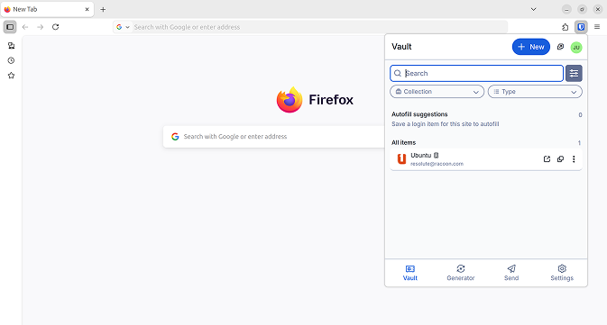

محرمانه و امن
همهٔ ابزارهایی که برای امنیت و محرمانگی برخط نیاز دارید در {{ DISTRO }} موجودند. با دیوار آتش توکار و پشتیبانی از ویپیانها و ابزارهایی چون کاربراتور مطمئن شوید که واپایش کامل دادهها در دستتان است.
فایرفاکس
وایرگارد
بریو
بیتواردن
|
محرمانه و امن همهٔ ابزارهایی که برای امنیت و محرمانگی برخط نیاز دارید در {{ DISTRO }} موجودند. با دیوار آتش توکار و پشتیبانی از ویپیانها و ابزارهایی چون کاربراتور مطمئن شوید که واپایش کامل دادهها در دستتان است. فایرفاکس وایرگارد بریو بیتواردن |
 |